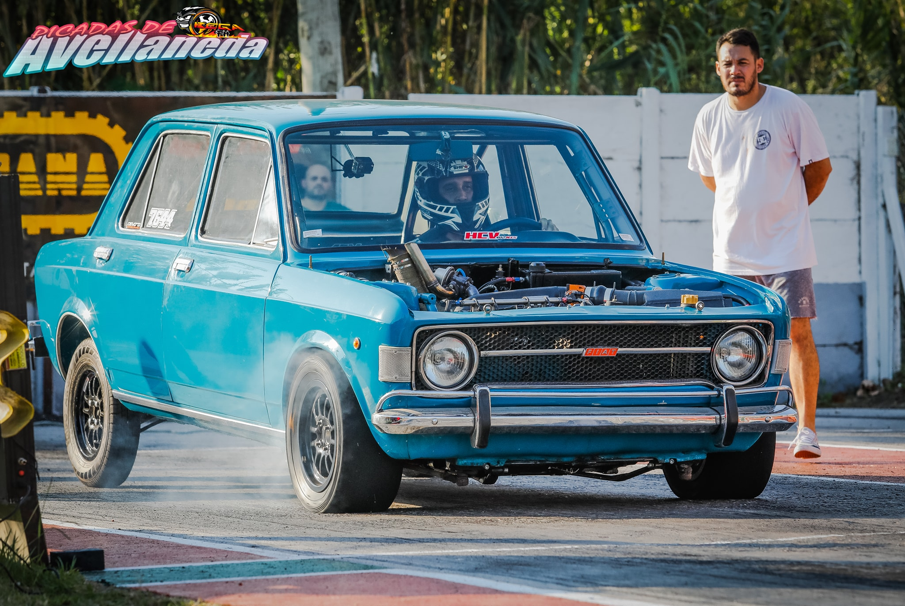

FIAT ARGENTINA
Fiat Automobiles -siglas de Fabbrica Italiana Automobili Torino (en español: Fábrica Italiana de Automóviles de Turín) es una histórica marca italiana de automóviles, bajo la que se comercializan vehículos desde 1899, origen del mayor grupo industrial italiano, Fiat S.p.A., propiedad de Stellantis. Sus principales mercados son Europa, Norteamérica, Latinoamérica y Asia, con fuertes ventas en Brasil e Italia. Su producción es de más de dos millones de unidades anuales. Bajo la marca Fiat se comercializan únicamente automóviles de turismo, siendo Fiat Professional la encargada de comercializar vehículos comerciales ligeros. Ambas marcas forman Fiat Group Automobiles con Lancia, Abarth y Alfa Romeo que junto a Chrysler Group, Ferrari y Maserati son las divisiones automovilísticas de Fiat S.p.A.
